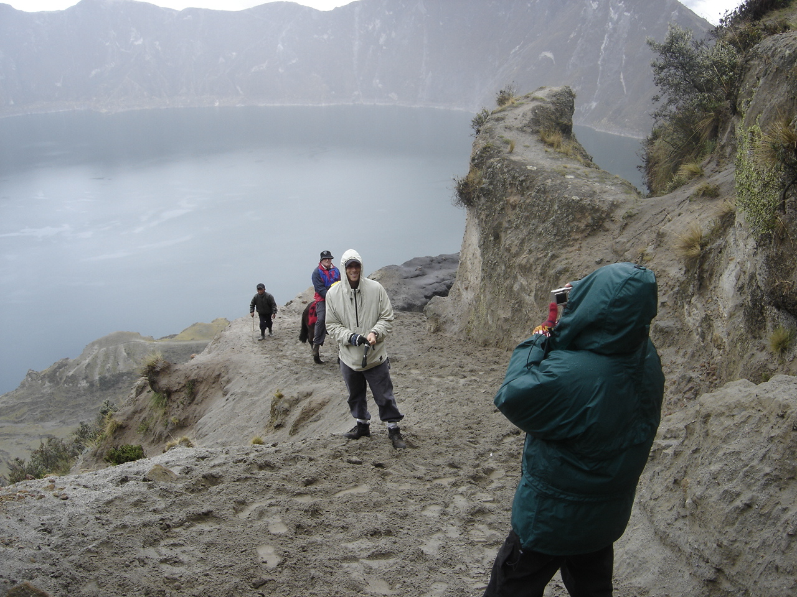
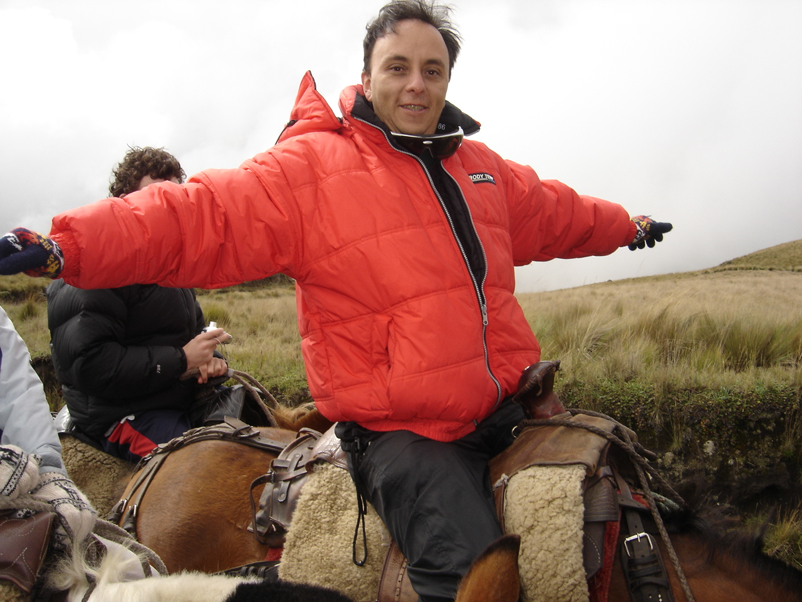
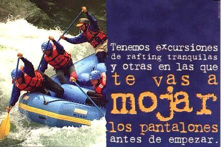
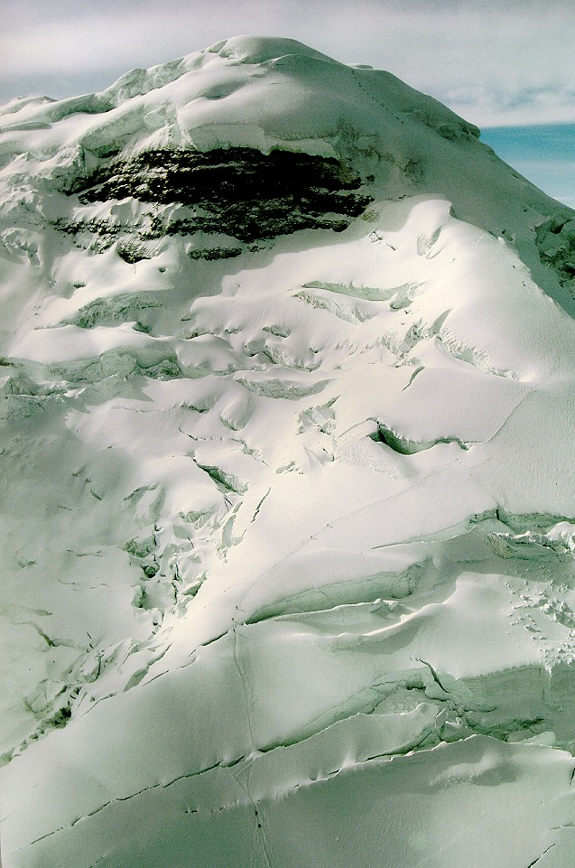

Adventure
Discover the Andes with the most comprehensive programs tailored for your physical conditions, Set your goals and we will take you there.

Hiking - Trekking
Trekking of mountains and pre Columbian roads, in the diverse lands of the Equator, is an amazing experience. The territory of Ecuador offer varied alternatives of carrying all type of trips and voyages of foot. We know paths to the famous mountains, pataus and forests offering almost all ecosystems in the world. We are famous for our orchids, hummingbirds and more.

Our TOP naturalist guides know by hand the National Park and protected areas system, they have taken specialization courses on each reservation, courses include flora, fauna, natural history and Indian communities in the area.
We offer treks of one, two or various days at the difficult level you request. We have routes on each volcano for you. Some routes are excellent for acclimatization before mountain climbing like Rumiñahui, Pasochoa, Carihuairazo, Imbabura or Mojanda. There are scenic hikes on Pichincha, Papallacta, Quilotoa and legendary Llanganatis. We also hike around the main ones like Chimborazo, Cotopaxi, Antisana, Cayambe, Altar and Sangay.
Departures: Daily on any National Park Tour.
Price: USD 232 per person if two passengers
From 5 passengers or more USD 165 per person
Program Includes:
- TOP National Naturalist guide
- Private transportation
- National Park taxes
- Operation License
- Gourmet Lunch at surrounding Hacienda or premium box lunch
- Optional equipment available for rent.
BOOK NOW!! AND SAVE 5%
Horse back riding

Mountain Bike
THE GREAT COTOPAXI MOUNTAIN BIKE TOUR
We will leave quito heading south for 80 km. On the famous panamerican highway with some photo stops on the way. When we reach the cotopaxi national park, we will visit a small museum and then we will drive you up by jeep to 4500 meters above sea level, from where your downhill cotopaxi bike ride will begin.
Enjoy great views of 11 surrounding mountains like antisana, cayambe, and illinizas. First a great downhill ride that brings you down to 3850 meters. Then you ride on the ecuadorian high plains were we will have a home made lunch. Then we continue riding through the park until the end of our almost 40 km. Ride.
At the end of this cotopaxi bike tour we bring you back to quito or you can take a bus to continue your ecuador adventure tour.
For your safety, you will be provided with a helmet, knee and elbow pads and gloves, as well as with a front suspension and v brake bike. You will enjoy an almost 40 km. Ride, sancks, fruits, drinks and lunch are included. Our most experienced riders have qualified this ride as the best one they have ever done.
BOOK NOW!! AND SAVE 5%
Rafting
THE LONG RUN - ECUADOR'S LONGEST ONE DAY RAFT TRIP
THE LONG RUN Ecuador's longest one day rafting trip! The ríos Toachi and Blanco are a fantastic introduction to the rivers of Ecuador. Flowing off the coastal side of the Andes they have some of the longest navigable sections of whitewater in the country. Combine this with the sights and sounds of the forest we pass through and you are guaranteed a day to remember.
Before setting off we will fit you with life jackets and helmets, give you a comprehensive safety briefing and train each crew in the paddling techniques needed to navigate our way down the river. Once on the river you can expect both the action of thrilling whitewater and the tranquility of drifting silently through tropical rainforests. So while you´re guaranteed to get wet you´ll also have the opportunity to be absorbed by the sounds of the forest and to see wildlife up close from our mobile "viewing platform".
Itinerary
- Depart Quito 6.30am. Travel west down through beautiful cloud forest to the shores of the river.
- Safety briefing & paddle practice on arrival at the river.
- THE LONG RUN.
- Jun-Feb Over 3 hours of on-river time plus a stop for our delicious riverside picnic lunch. 27km.
- Mar-May Over 4 hours of virtually non-stop whitewater on the upper río Blanco. 45km. Finish the river trip with some well-earned icy cold cervezas and return to Quito. Arrive approx: 7.30.
Departure : Daily (minimum 4 passengers)
Price : USD 75
Includes : Professional guides, top of the line rafting equipment, a delicious lunch plus snacks and beers, transport ex Quito, and fun all the way! Wetsuits are available for rent on the sometimes chilly Upper Blanco river (Mar-May) for $5.

Climbing the 3 kings of the Andes : Cotopaxi, Chimborazo or Cayambe
The Cotopaxi rises majestically above the Andean cordillera and is one of the most active volcanoes of Ecuador. The almost perfect cone shape is an identification sign which makes it world famous as a picture book volcano. Reaching the top of this volcano is a must for every mountaineer who wants to reach even higher peaks. It is technically not a difficult mountain, but a good physical condition is a basic requirement for a successfull climb. From the peak you can enjoy a beautiful view over the wide Andes landscape and with a clear view you can even see all of the snow-capped mountains of Ecuador. A glance in the crater with a diameter of 800m, from which a sulphur steam is still flowing. You can imagine how powerful the forces of nature must have been to create a natural beauty of this kind.
Itinerary
- Day 01: Quito - El Chasqui - Cotopaxi National Park
- Day 02: Climb Cotopaxi
At 9 am, we depart from Quito over the Pan-American Highway to the South, to El Chasqui and from here on we drive to the Cotopaxi national park. After that a short stop at the Museum of Nature, to enjoy the flora and fauna. After a 3 hour drive we reach the parking lot at 4.600 m, from here it goes by foot to the Jose Rivas Refuge on ca. 4.800m. After picnic lunch we walk towards the glacier. In the afternoon we return to the refuge for dinner and accommodation.-/L/D
After a little breakfast we start climbing at midnight. If the weather condition and the physical condition of the group is good, we will reach the peak (5.897 m) after 6-7 hours. If the weather is good, we will have a spectacular view over the surrounding, snow-covered volcanoes. Afterwards we return to the hut. In the afternoon we head back to Quito. B/L/-
All meals while in Tour
Price : Private Tour (1 Person) USD 420.-
From 2 People USD 290.- per person (we send 1 guide for every 2 passengers)
BOOK NOW!! AND SAVE 5%

In the price included:
Private 4WD transportation, English speaking qualified mountain guide, meals as mentioned above (B: breakfast; L: lunch; D: dinner), overnight stay at the mountain refuge. For climbing: mountain boots, ice axe, crampons, harness, rope, Entrance National Park, radio, cellphone and oxigen..!
Not included in the price:
Personal equipment, sleeping bag, tips, mountain equipment: gaiters, warm and waterproof clothes, sunglasses, headlamp with batteries, gloves etc.
What to bring with you:
Sleeping bag, sun glasses, sun block, rain wear, warm clothes, torch, hat, trekking shoes, warm clothing, canteen, camera.